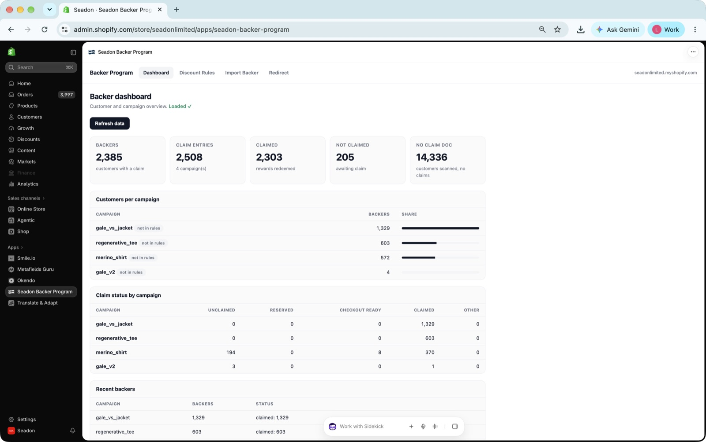
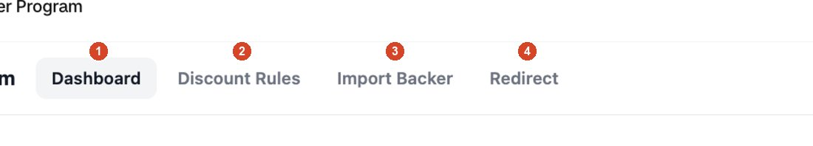
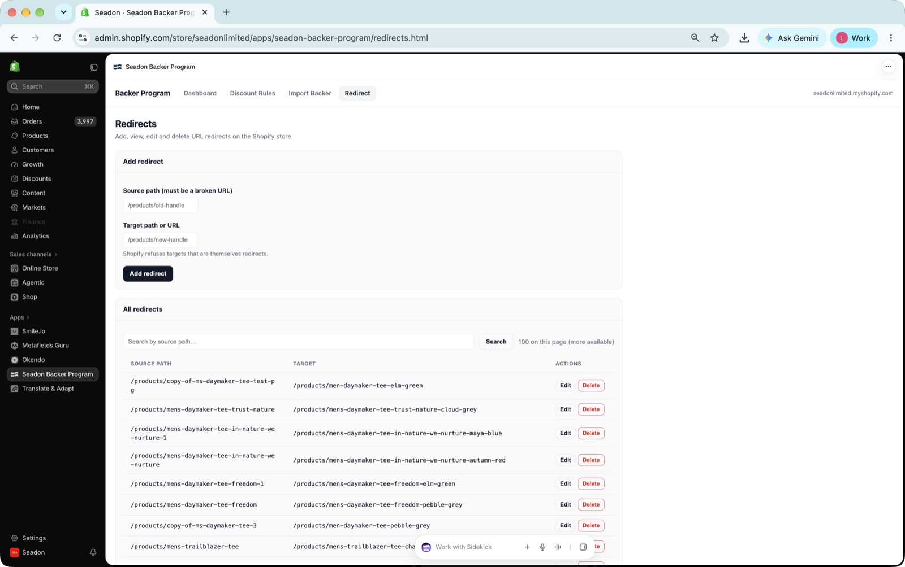
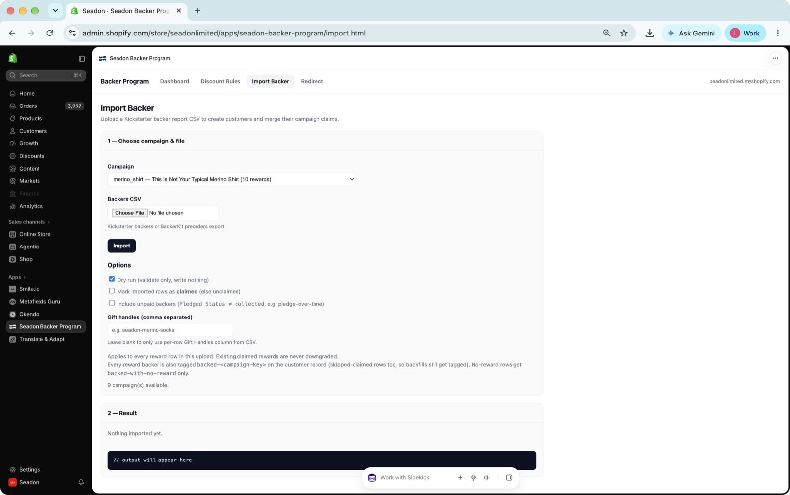

On this page
B0 · What the app does and where its tabs are
The Backer Program is a custom, single-merchant embedded Shopify app on Vercel. It powers the Kickstarter backer program, bundle and Black Friday pricing, the free gift giveaway, per-warehouse inventory visibility and order routing. It is dependency-free plain ES modules on Node 20; every request enters through one serverless function, api/[...path].js, and a route table dispatches it.
Getting to the app
- Click Apps in the admin sidebar, then Seadon Backer Program. The app opens inside the admin, so the sidebar stays visible.
- Or paste
admin.shopify.com/store/seadonlimited/apps/seadon-backer-programinto the address bar. - You should see the app title, a row of tabs, and the store domain on the right.
If the app will not open
A message says it is not embedded. You opened the app's own address instead of the admin one. Use the address above.
The page is blank or spins. The app deployment is down. Check /api/health in a new tab; a reply means the app is up and the problem is your session. Sign out and back in.
You can see the tabs but no data. The dashboard is waiting for the customer mirror. Press Refresh data and give it a minute.

| Tab | What it is for | Writes anything? |
|---|---|---|
| Dashboard | Backer counts, campaign breakdown, claim status per campaign, recent backers; the Refresh data button. | Only through Refresh data, which rebuilds the customer mirror |
| Discount Rules | The bundle and Black Friday pricing document, in a form editor or as raw JSON. | Yes: shop metafield bundle.rules |
| Import Backer | Upload a Kickstarter or BackerKit CSV to create customers and merge campaign claims. | Yes: customer claims, tags, claim ledger |
| Redirect | Storefront URL redirects for renamed or retired product handles. | Yes: Shopify URL redirects |

Redirects
Renaming a product or retiring a handle leaves the old URL dead unless a redirect covers it. The Redirect tab is the list of those rules, and it is the first place to look when someone reports a 404 on a link from an old campaign.

B1 · Backer management and the dashboard
The dashboard reads from a Redis mirror of the customer table, not from Shopify directly. That is why it loads in seconds: a full customer scan on every page load was the old failure, and the mirror replaced it.
Measured on 25 November 2026, the dashboard reported 2,385 backers (customers with a claim), 2,508 claim entries across four campaigns, 2,303 claimed, 205 awaiting claim, and 14,336 customers scanned with no claim document. Per campaign: gale_vs_jacket 1,329 claimed; regenerative_tee 603 claimed; merino_shirt 572 backers split 370 claimed, 194 unclaimed and 8 checkout ready; gale_v2 4 backers, 1 claimed and 3 unclaimed.
What each card means
| Card | What it counts | What to do with it |
|---|---|---|
| Backers | Customers holding at least one claim entry, in any state. | The size of the program. It only falls when a claim is deleted. |
| Claim entries | Claims across all campaigns, so one customer with two campaigns counts twice. | Compare it with Backers to see how many people hold more than one campaign. |
| Claimed | Rewards paid for and fulfilled. | The finished work. If this stalls for a day, check the orders-paid webhook. |
| Not claimed | Backers who have not started, including abandoned checkouts. | The follow-up list. Any number that grows for a week is a communication problem, not a code problem. |
| No claim doc | Customers scanned who hold no claim at all. | Normal and large: these are ordinary shoppers, not backers. |
The daily five minutes
- Open the dashboard and confirm it says Loaded ✓. Without that, the numbers below are stale or missing.
- Compare Not claimed with yesterday. A jump means new claims arrived, or a payment failed for several people at once.
- Look at Claim status by campaign. Any row with a Checkout Ready count that has not moved in a day is a stuck checkout: those people were sent to pay and did not.
- Check Black Friday import volume if a campaign is live: the mirror is the thing that gets busy.
Reading "not in rules"
The Customers per campaign table labels a campaign "not in rules" when no pricing group in the current Discount Rules document names it. That is normal for closed campaigns: the claims stay, the pricing group was removed. It is only a problem when an active campaign shows it, because then the campaign's products have no bundle pricing.
Refresh data
Use Refresh data when a customer created in the last few minutes does not appear, or after a bulk import. It rebuilds the mirror from Shopify and is safe to run at any time. The scheduled rebuild runs daily at 05:23 UTC; webhooks keep the mirror current in between, with propagation measured at about three seconds.
Where a backer's data lives
Per customer, the campaign claim is one entry in the kickstarter.claims customer metafield, keyed by campaign. It carries the pledge amount, quantity, gift products, free-shipping flag, note and status. The campaign configuration it refers to is the kickstarter.campaign_rules shop metafield. A backer's claim is therefore never a row in a database you can lose: it is a metafield, versioned by Shopify, and it survives an app redeploy.
B2 · Campaign setup
A campaign exists in two places, and both are needed. The claim entries on customers are created by the import. The campaign configuration in kickstarter.campaign_rules defines titles, rewards, add-ons and the reward-id mapping that the import validates against.
- Decide the campaign key. It is the identifier on every claim and on every pricing group, and renaming it later orphans both. Lowercase, underscores, as in
merino_shirt. - Write the campaign rules document: title, reward list, add-ons, and the mapping from Kickstarter reward ids to store products.
- Write it to the
kickstarter.campaign_rulesshop metafield. The app's campaign-rules endpoint is the supported route; the importer's own metafield helper is deprecated and kept only for legacy consumers. - Import the backer report (B3 below) with the dry run first.
- Add the campaign to the pricing document in Discount Rules if its products need bundle pricing, using the same campaign key.
- Check the dashboard: the campaign should appear with a backer count and a claim status breakdown.
The Import Backer page reported 9 campaigns available on 25 November 2026, which is the count in the campaign rules document, not the four campaigns currently holding claims. The gap is expected: older campaigns keep their configuration long after their claims are closed.
The campaign rules editor admits one email address
The storefront page that edits campaign rules is gated to customer.email == logan@seadon.co plus design mode. It saves to the app, while the portal and the claim page read a GitHub raw URL pinned to a specific commit. After handover nobody else can open the editor, and a save does not change what the pages load. Change both before 16 December: the email constant in sections/main-campaign-rules-editor.liquid, and the pinned URL in that section and in sections/main-backer-portal.liquid.
B3 · Reward claims, state by state
A claim moves through four states, and the app owns the transitions. The dashboard's Claim status table shows the same four columns, so an operator can read state directly off the screen.
| State | Means | Who moves it |
|---|---|---|
| unclaimed | The backer has a claim entry and has not started. An expired reservation returns here so the backer can retry. | Import, or reservation expiry |
| reserved | The backer began the claim and holds the reward, but no draft order exists yet. | Claim route on reserve |
| checkout_ready | A draft order was created and the backer was sent to checkout. Holds a reservation id and an expiry. | Claim route after draft creation |
| claimed | Paid. The order id, status URL and finalisation time are recorded. Immutable from here: a replay reports "already finalized" rather than rewriting. | orders/paid webhook |
What to do in each state
- unclaimed. Nothing, unless the backer asks. Confirm the claim exists and the customer carries the
backer-<campaign>tag. Never edit the claim to push someone forward: the portal does that. - reserved. The backer started and stopped before the draft order existed. It clears itself after 30 minutes when they retry. There is nothing to click.
- checkout_ready. An invoice exists and is waiting to be paid. If it sits for a day, ask the backer to reopen the portal. A new reservation deletes the previous unpaid draft, so old invoice links stop working.
- claimed. Finished. Do not edit the claim. A correction is a refund or a new order, recorded against the order, not the claim.
A reservation lasts 30 minutes by default (CLAIM_RESERVATION_MINUTES), and the expiry is stamped on the claim. The draft order's inventory hold uses the same value. Expiry is computed when a claim is read, not enforced by a job: no scheduled task rewrites an expired claim, and the claim handler does not call the expiry check before overwriting one. A claim abandoned at checkout stays at reserved or checkout_ready in the dashboard until the backer tries again, which matters when you count outstanding backers.
State writes sit behind a kill switch, CLAIM_STATUS_WRITES_ENABLED. With it set to false, reserve and finalise writes are skipped while draft orders are still created, so a shopper can reach a payable invoice whose claim never moves. Treat it as a stop for state churn during an incident, not as a general brake.
Paying an invoice whose claim is stale
The checkout_ready write is best effort: it is wrapped so a metafield failure cannot block the invoice. If that write was lost, the order arrives with a reservation id the claim no longer holds, and the orders/paid handler refuses it with "Order reservation does not match claim". The backer has paid and the claim stays unclaimed. Check the claim's reservation id against the order's line-item attributes before refunding anything.

- Choose the campaign. Confirm the reward count in the dropdown matches the campaign you mean.
- Export the backer report from Kickstarter or BackerKit and attach it as the Backers CSV.
- Leave Dry run checked and press Import. Read the result panel: it reports per-row actions and totals, and it refuses the whole file if any Reward ID is missing from the campaign rules.
- Uncheck Dry run and import for real. Existing claimed rewards are never downgraded, so re-importing a file is safe.
- Tick Mark imported rows as claimed only when the rewards were already fulfilled outside the store. This skips the claim flow for those rows on purpose.
- Tick Include unpaid backers only for pledge-over-time backers whose status is not collected. Their rows import as claims that cannot be priced until payment.
Every field on the import page
| Field | What it does | What to choose |
|---|---|---|
| Campaign | Which campaign every row belongs to. The reward count in brackets comes from the campaign rules file. | The exact campaign. A wrong choice writes claims under the wrong key, and undoing that means editing customers one by one. |
| Backers CSV | The Kickstarter or BackerKit export. | The original export, unedited. Edit it in a spreadsheet only if you save it back as plain CSV. |
| Dry run | Validates and reports without writing. | On, for the first pass of every file. Leave it on until the report matches what you expect. |
| Mark imported rows as claimed | Writes the claim as already fulfilled. | Off, unless the rewards were sent outside the store. Claimed rows skip the portal entirely. |
| Include unpaid backers | Keeps rows whose pledged status is not collected. | On only for pledge-over-time campaigns; those claims cannot be priced until payment lands. |
| Gift handles | A list of gift product handles applied to every reward row in this upload. | Blank when the CSV has its own Gift Handles column, which wins for those rows. |
| Import | Runs the upload. | Press once. Re-pressing the same file is safe: claimed claims are never downgraded. |
| Result panel | Per-row actions and totals. | Read the first twenty lines. A refused file names the unknown reward ids and writes nothing. |
What the import writes, and what it costs
Every reward backer gets the tag backer-<campaign-key> on the customer record. Rows with no reward get backed-with-no-reward. The claim entry is merged, not replaced, and the write carries an optimistic concurrency digest so two imports cannot silently overwrite each other. A second run on the same file is a no-op for rows already present.
Three limits are worth knowing before the first real file. The request body is capped at about 3.5 MB, so a larger export has to be split; the handler rejects oversized bodies rather than chunking them. Rows run through two workers, clamped to four, with up to eight attempts when Shopify throttles. And the campaign list in the dropdown comes from the campaign rules JSON on GitHub, not from Shopify, so a campaign missing from that file cannot be chosen here.
B4 · Pricing configuration
One document holds every bundle and Black Friday price: the bundle.rules shop metafield. The Discount Rules tab is an editor over it, with a raw JSON view for the cases the form does not cover. The theme never computes a bundle price itself; it asks the app for a quote, and the app prices from this document.
Structure, as the form exposes it: groups, each with an identifier, a label, a mixable flag, tiers, optional Black Friday single prices, and a family selector that maps products the assignment map has not seen. A tier is a quantity threshold plus a price rule: percent off each unit, a fixed price, or buy N get X free.
- Open Discount Rules and check the status line: it reports loaded groups and assignments, for example 15 groups · 268 assignments.
- Edit in Editor. Saves are validated server-side, so a malformed document is rejected rather than reaching the pricing engine.
- Use Raw JSON only for structural changes the form cannot express, and diff your edit against the loaded document before saving.
- Verify with a cart quote: add a qualifying set and read the line prices on the storefront.
- Record what changed and why. The pricing document is the one place where a typo costs money on every order.
B5 · Ongoing maintenance
| Job | When | How to run it by hand |
|---|---|---|
| Customer mirror rebuild | Daily 05:23 UTC | POST /api/customers-sync with cron auth, or Refresh data on the dashboard |
| Inventory full rebuild | Daily 04:17 UTC | /api/inventory-sync |
| Webhook re-registration | After a webhook outage | /api/shopify-proxy/register-inventory, register-orders-paid, register-orders-routing, register-customers; signed app-proxy calls |
| Health check | Anytime | /api/health (no auth, counts only) |
| Egress probe | When filling Shopify's IP allowlist | /api/egress-probe |
The maintenance calendar
Four rhythms cover everything that decays on its own. If nothing else is done, do the daily line and the campaign-close line: those two prevent almost every incident this app has had.
| Rhythm | What to check | What good looks like |
|---|---|---|
| Daily | Dashboard says Loaded; the Not claimed count; Checkout Ready rows that did not move; /api/health counts |
Numbers move in the direction the calendar explains, and no row is frozen. |
| Weekly | Discount Rules still contains the offer you intend; expired codes; renames that need a redirect; imports still pending | The pricing document matches the live marketing, and every old product link resolves. |
| Monthly | Token age, webhook registration, the app test suite, draft theme count | Tests pass, a re-registered webhook delivers, and drafts from finished work are deleted. |
| At campaign close | Black Friday single prices, announcement bar, campaign rules file | Sale prices deleted rather than dormant, and the rules file keeps the campaign for history. |
Two platform limits shape this list. Vercel's Hobby plan allows one cron invocation per day, so the two schedules above are the whole budget and auto-deploys from git are deliberately off. Shopify blocked bulk operations from ASN 12322 after flagging unusual activity (ticket a Shopify support ticket); ordinary API calls are unaffected until enforcement is switched on.
Token rotation
The dashboard mints the permanent token by itself. Every dashboard load fires a silent request to /api/access-token, which exchanges the admin session for a non-expiring offline token and keeps it in Redis. The Get migration token button named in the original plan does the same thing by another route, so the app may already hold a permanent token by the time you read this. Check the stored value and Vercel's SHOPIFY_ADMIN_API_TOKEN before assuming the short-lived token is still in force.
Rotate once during handover anyway, so the successor holds a credential that was never shared in transit. Treat the rotation as mandatory if the old token ever appeared in a screenshot, a document or a chat message.
Admin access is API access
The app's credential endpoint returns a durable token to a live admin session, and its optional shared secret is not currently enforced. That is why the staff account transfer on page 3 is a security event, not an administrative one. The technical mechanism is in the internal edition only, because publishing it would identify a live attack surface.
B6 · Troubleshooting
| Symptom | Check | Cause and fix |
|---|---|---|
| Dashboard slow or timing out | /api/health shows the mirror source; the page should read "Loaded" |
The mirror is empty or Redis is unreachable, so the app is scanning Shopify. Run Refresh data; check the Upstash connection strings in Vercel. |
| Claim stuck at checkout_ready | Order exists? Was orders/paid delivered? |
The finalise step is webhook driven. Re-register the orders-paid webhook; the claim finalises on the next delivery, and a replay is idempotent. |
| "Order reservation does not match claim" in the logs | The order's line-item reservation id against the claim's reservation_id |
The checkout_ready write was lost after the invoice was created, so the backer paid an invoice the claim no longer recognises. Reconcile by hand: order paid, claim still unclaimed. |
| Campaign names blank or marked "orphan" on the dashboard | Whether the campaign exists in the rules JSON and in kickstarter.campaign_rules |
The dashboard still reads titles from the deprecated shop metafield. A campaign imported from the GitHub rules only shows counts, not its title. |
| Claim refused as not payable | Claim amount versus pledge; free-shipping flag | Reward budget is capped at the pledge, so an add-on set priced above the pledge is rejected rather than discounted to zero. |
| Import refuses the file | The pivot check output: unknown reward ids | A Reward ID in the CSV is not in the campaign rules. Fix the rules or the file; the importer deliberately imports nothing rather than half a file. |
| Bundle prices missing for every product | Discount Rules status line: does it fail to load? | Malformed bundle.rules. The editor and the quote both need a valid document; restore the last good JSON. |
| Inventory counts drift from Shopify | Last inventory sync time in /api/health |
Inventory updates arrive by webhook with a nightly rebuild. A missed webhook leaves one variant stale until the rebuild; run /api/inventory-sync. |